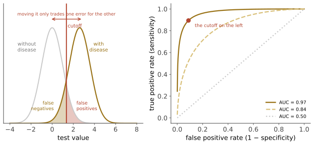

本页目录
诊断 II · 检验特性：敏感度、ROC 与截断值
上一页把诊断写成概率更新。这一页处理更新所用的那个乘数从哪里来、可不可信、能不能调。核心信息只有一条：敏感度与特异度不是"检验的固有精度"，而是"检验 + 截断值 + 人群"三者共同决定的。
1. 2×2 表与四个比率
| 病 + | 病 − | |
|---|---|---|
| 检验 + | TP | FP |
| 检验 − | FN | TN |
必须分清的一件事：
- \(Sn\)、\(Sp\) 沿"列"计算——给定疾病状态问检验怎么表现。它们相对独立于患病率；
- \(PPV\)、\(NPV\) 沿"行"计算——给定检验结果问疾病概率。它们强烈依赖患病率。
记忆法（老口诀，但确实有用）： SnNout——Sn 高的检验，结果 Negative 时可 rule out； SpPin——Sp 高的检验，结果 Positive 时可 rule in。
理由一行就能看出：\(Sn \to 1 \Rightarrow LR^- = (1-Sn)/Sp \to 0\)（强力排除）；\(Sp \to 1 \Rightarrow LR^+ = Sn/(1-Sp) \to \infty\)（强力确立）。
2. 截断值：一个不可回避的权衡

这张图是本页的全部：两个分布重叠的程度决定了检验的判别能力（AUC），而截断值只决定你在这条曲线上站在哪一点。
降低截断值 → \(Sn\) ↑、\(Sp\) ↓（宁可错抓）；提高截断值 → \(Sp\) ↑、\(Sn\) ↓（宁可放过）。
该站在哪一点，由代价决定，不由统计决定：
| 情境 | 取向 | 例 |
|---|---|---|
| 漏诊代价 ≫ 误诊代价 | 高 Sn（低截断） | 急诊排除主动脉夹层、脑膜炎；献血筛查 |
| 误诊代价 ≫ 漏诊代价 | 高 Sp（高截断） | 确诊性检查、启动毒性治疗前 |
| 两步策略 | 先高 Sn 筛、再高 Sp 确认 | HIV（初筛 → 确证）、多数癌症筛查 |
"两步策略"是现实中最常用的解法，且它正确地承认了：没有单个检验能同时做好两件事。
3. AUC 的意义与它的陷阱
（等价于 Mann–Whitney U 统计量的标准化形式，🔗 数学站数理统计线。）
AUC 的三个常见误用：
- AUC 高不等于临床有用。AUC 0.85 的模型在低患病率人群中 PPV 仍可能很低；且 AUC 完全不含代价信息——它对两类错误一视同仁，而临床上从不如此；
- 比较 AUC 的增量常常被夸大。加一个新标志物使 AUC 从 0.80 升到 0.82，在重分类指标（NRI、决策曲线分析）上往往几乎没有价值；
- AUC 依赖研究人群的疾病谱。在"重症患者 vs 健康志愿者"上评估会给出漂亮的 AUC，在真实的鉴别诊断人群中大幅下降（谱偏倚，第 07 页）。
更贴近决策的替代：决策曲线分析（decision curve analysis）——直接问"在各种阈值偏好下，用这个模型比'全治'或'全不治'净获益多少"。它把代价显式地放进评价，是近十五年诊断研究方法学的重要改进。
4. 患病率如何摧毁 PPV
这是本站最重要的定量事实之一。设 \(Sn = 0.99\)、\(Sp = 0.99\)（已是极优秀的检验）：
| 患病率 | PPV |
|---|---|
| 50% | 99% |
| 5% | 84% |
| 1% | 50% |
| 0.1% | 9% |
| 0.01% | 1% |
在患病率 0.1% 的人群中，一个 99%/99% 的检验阳性时，仍有 91% 的概率是假阳性。
这不是检验不好，而是算术。 分母中的假阳性项 \((1-Sp)(1-p)\) 在 \(p\) 很小时占据主导——罕见事件的筛查天然被假阳性淹没。第 03 页把这条展开成完整的筛查论证。
🔗 这与你在预测层遇到的问题完全同构：在一个基础发生率很低的事件上，即使模型"准确率很高"，被标记为"将发生"的那些命题里绝大多数仍会落空。医学把这条教训写进了指南体系，值得直接借用。
5. 金标准问题：所有这些数字是怎么得出来的
要算 Sn 与 Sp，必须先知道谁真的有病——这需要一个参考标准。现实中的参考标准往往不完美，由此产生一组系统性偏倚：
| 偏倚 | 机制 | 后果 |
|---|---|---|
| 验证偏倚（work-up bias） | 只有检验阳性者才去做金标准确认 | 高估 Sn、低估 Sp |
| 不完美金标准偏倚 | 参考标准本身有错 | 若两者错误相关，高估一致性 |
| 谱偏倚 | 研究人群病情比实际使用人群更重/更轻 | 高估判别能力 |
| 纳入偏倚 | 被评价的检验本身参与了金标准的定义 | 循环论证，严重高估 |
| 观察者偏倚 | 判读者知道其他信息 | 需盲法判读 |
读一篇诊断准确性研究时，先找 STARD 报告清单里的这几项：是否连续纳入、是否所有人都做了金标准、判读是否盲法、纳入人群是否与你的患者相似。这份检查清单是本页最实用的产物。
6. 常被误读的检验：三个例子
① D-二聚体：\(Sn\) 极高（\(LR^- \approx 0.05\)–0.1）、\(Sp\) 低。正确用法是在低-中验前概率患者中"排除"肺栓塞/深静脉血栓；在高验前概率患者中做它是错的——阴性也不能排除（后验仍高于治疗阈值），而阳性什么也没告诉你。这是"检验的用途由验前概率决定"的最干净的例子。
② ANA（抗核抗体）：在健康人群中低滴度阳性相当常见。在没有临床怀疑的情况下查 ANA，几乎注定产生假阳性 → 转诊、复查、焦虑。🔗 姊妹站第 10 页讲其免疫学机制。
③ 高敏肌钙蛋白：敏感度提高后，"阳性"的含义变了——它现在检出许多非心梗的心肌损伤（心衰、肾病、脓毒症、剧烈运动）。所以现代路径用"变化值（delta）"而非单次绝对值，并结合临床（第 10 页）。这是"检验变好反而使解读变难"的典型：更高的敏感度必然带来更低的特异度，除非同时改变判读框架。
7. 连续变量被二分的代价
临床检验常把连续值切成"正常/异常"。这一步丢掉信息：TSH 4.6 与 TSH 25 都是"高"，含义天差地别。
两条改进：报告并使用似然比分层（不同数值区间给不同 \(LR\)，而非只有阳/阴两档）；在决策模型中直接用连续值。
"参考范围"本身的定义也值得知道：通常取健康人群的中间 95%——这意味着按定义就有 5% 的健康人"异常"。做 20 项检查，平均会有 1 项落在参考范围外（假设独立）。这是"全套体检"产生大量无意义异常的算术原因，第 03 页继续。
下一页：把以上结论用到筛查上——为什么"早发现早治疗"这句正确的直觉，在数据上经常不成立。